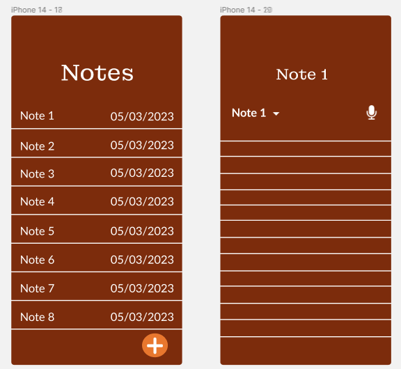
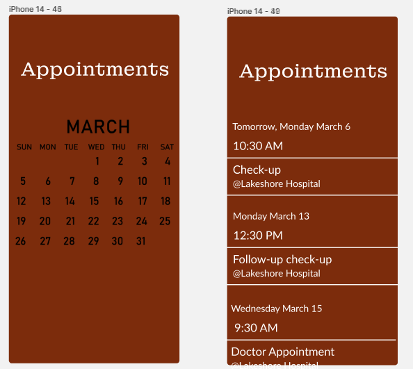

Mockups
Here are our final mockups of the application we plan to build, with all the pages representing different features.
Home

Diary

Notes

Gallery

Passwords

Medications

Appointments

The post-pandemic world has been tough an every sector of the population, for now is safe from the reaches of a deadly virus. However, there are certain members of the population that might be put in a more vulnerable position due to the effects of a total lockdown of society. In Quebec, that portion of the population was the senios: the government has found that they struggle more than the average person, and have less support to top off. We have looked into this issue, and have come up with a comprehensive app solution that will hopeful provide some much needed relief to this oft forgotten age group: Storward, a place where seniors will be able to do all their personal data management.
The elderly can sometimes be disregarded by the rest of the population; due to the fact that they tend to be out of their working careers. We intend not to make that mistake, and gather as much information as possible from and about them to be able to make an informed decision on the type of application they would like to see.
An official government study has been done into the state of seniors amid their isolation and loneliness during the pandemic, and the results are no doubt of some concern. This study had been conducted under the support of the Disease Prevention and Health Promotion Committee of Quebec, and has been peer reviewed by multiple accredited Quebec researchers. Here are some of the major findings from this paper:
This isolation was also documented to be having severely negative effects on the senior’s physical and mental health: these seniors were more likely to have health problems, a lesser well-being and a higher risk of mistreatment. They were also less likely to be able to adapt and pick up healthier lifestyles, and reported to be increasingly vulnerable to natural disasters as well as having an increased mortality rate. So clearly, there is a big problem here.
Thankfully the study resulted in a list of suggestions to potentially help these people out of their perilous situation. The most important thing here is to reach out the seniors, understand what their problems were, and give support where needed. The type of support needed was vast, ranging from identification aid, to actions that promote social connection between the elders and their community. However, we saw potential for our app to fit in the range of “Information” and “Support Services”. It is suggested in this study to:
We plan to take these suggestions to heart in the construction and design of our application. The full study can be found here.
We were able to meet with a few seniors that currently live in Quebec, and discuss their experiences of living through the isolation of the pandemic and getting some insight into what types of services they would find helpful in such situations. They were made aware of the context of the interview, the purpose of the research and related project before the start of the interview, and we assured them that their identities would remain anonymous even if perhaps we would use their comments for the purpose of our research paper. When asked about the types of technical support they would have appreciated during their isolation, here are a couple of excerpts from their answers:
We value the interviews we have had with these seniors, and are going to attempt to design an application that will alleviate their frustrations.
Through our user research, we have created two user archetypes of people who we believe are our target audience. These users have different personalities, goals, and look for different functionalities in applications.
Our potential users have many painpoints with the current way they have to go about handling their data collection, and we have mapped a few pathes they may take during their day of technology use.
Storward is an application which takes features that the elderly can benefit from and puts them in one platform. The name Storward is derived from two acronyms. One which is ‘store’ and the other being ‘steward’. The ‘stor-’ acronym is used as the application is a platform where a user can store all kinds of information such as diaries, notes, passwords, medications, etc. The -ward acronym from ‘steward’ means that the application is steward of the users data, meaning their data will be kept secured, accessible and trusted.
On our app, users will be able to store all sorts of information that they need to keep their lives organized and in check. They can write notes, make diary entries, store their passwords, save pictures and even set up a calendar with various appointments and events they want to keep track of. The goal is to allow these users to access as much of their commonly used information as possible in one place, so that they would be able to go to one place for everything and make things easier in their day to day lives.
Here are our first sketches of the application we are planning to develop. You can roughly see the mobile style interfaces, as well as the different pages we plan to have.
These are the wireframes we based our final design off of. The main focus here was page placement and the relevant feature sizes, not stylizng and colours yet, which come in the following sections.
This is the color palette we decided to use. We feel the brown and light colors relax the user, and are more attractive to an older user base.
We use the Montagu Slab font for titles, as we felt the bold nature of the text made it appropriate to catch the eye as a header.
We use the Lato font for regular text, because it is smooth to read and looks good to the eye.
Here are our final mockups of the application we plan to build, with all the pages representing different features.
This project allowed us to see what it is like to make an application for the elderly. This approach was definitely new to us which required us to view ideas in a perspective we have not done before. This allowed us to make an application where we could see the struggles of the elderly and try to make their life a little bit easier. We enjoyed making our project Storward and learned a lot from this project.
2020 All Rights Reserved. Design by Free html Templates